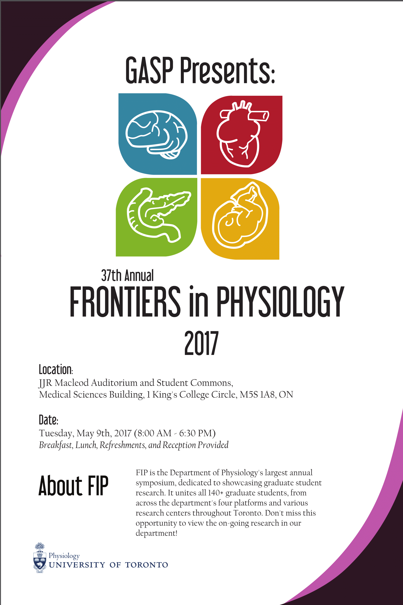
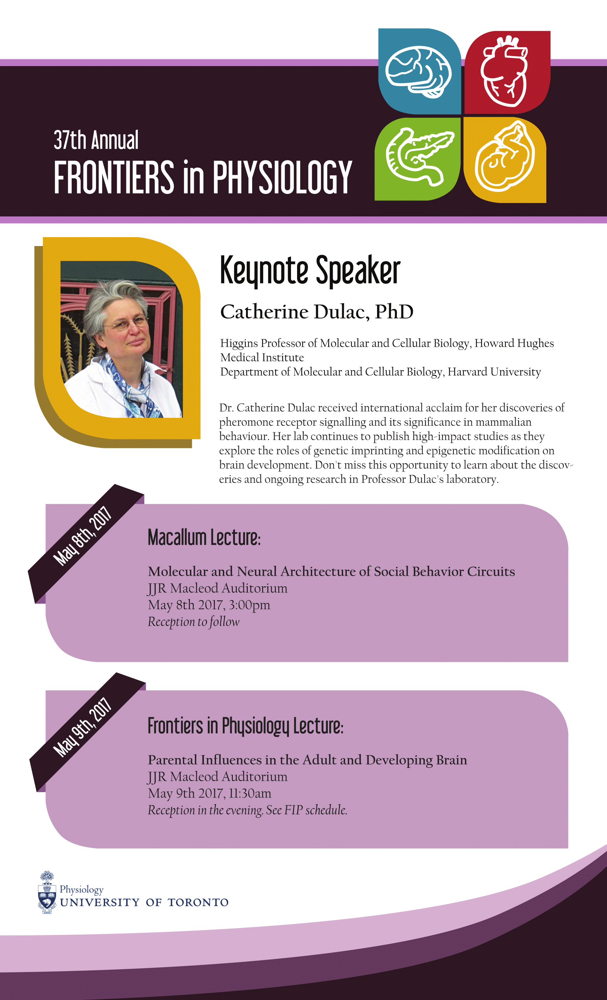
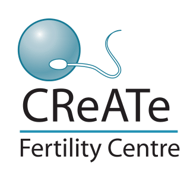
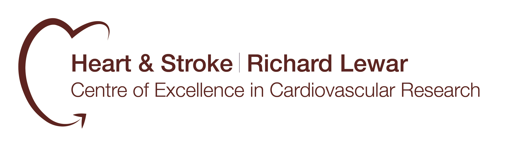
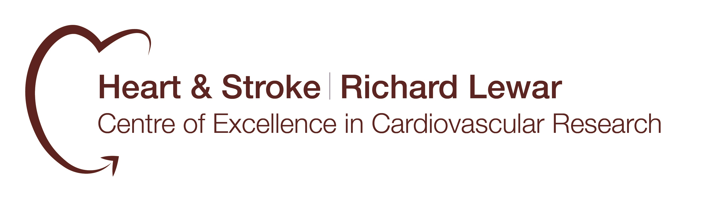

 
37th Annual Frontiers in Physiology Research Symposium
Program - Tuesday May 9th, 2017
|
Time |
Description |
Location |
|
8:00 AM – 9:00 AM |
Registration & Light Breakfast |
Lobby of JJR Macleod Auditorium |
|
9:00 AM – 9:15 AM |
Opening Remarks |
JJR Macleod Auditorium |
|
9:15 AM – 10:10 AM |
Oral Presentation1 Session 1 |
JJR Macleod Auditorium |
|
10:10 AM – 10:20 AM |
Refreshments Break |
Lobby of JJR Macleod Auditorium |
|
10:20 AM – 11:20 AM |
Poster Presentation Session 1 |
Naylor Student Commons2 |
|
11:20 AM – 11:30 AM |
Break |
|
|
11:30 AM – 11:35 AM |
Special Research Presentation (CReATe Fertility Centre) |
JJR Macleod Auditorium |
|
11:35 AM – 12:35 PM |
FIP Keynote Lecture by Dr. Catherine Dulac |
JJR Macleod Auditorium |
|
12:40 PM sharp |
Departmental Photo |
MSB Front Steps3 |
|
12:50 PM – 1:20 PM |
Lunch & Vendor Displays4 |
Naylor Student Commons2 |
|
1:20 PM – 2:20 PM |
Poster Presentation Session 2 |
Naylor Student Commons2 |
|
2:20 PM – 2:30 PM |
Break |
|
|
2:30 PM – 3:40 PM |
Oral Presentation1 Session 2 |
JJR Macleod Auditorium |
|
3:40 PM – 3:50 PM |
Refreshments Break |
Lobby of JJR Macleod Auditorium |
|
3:50 PM – 4:45 PM |
Oral Presentation1 Session 3 |
JJR Macleod Auditorium |
|
4:45 PM – 5:05 PM |
PI Power Talks5 |
JJR Macleod Auditorium |
|
5:05 PM – 6:35 PM |
FIP Reception: FIP Awards Ceremony |
Naylor Student Commons2 |
1Oral Presentation Sessions 1 and 3 will feature 4 presentations each, while Oral Presentation Session 2 will feature 5
2Naylor Student Commons: formerly known as the Medical Sciences Building (MSB) Stone Lobby
3Facing King’s College Circle
4Vendor booths will be on display throughout the day
5Department of Physiology’s four platform heads will highlight outstanding achievements and research in their respective platforms over the past year
Should you have any questions regarding abstract submission, please email khanna.kim@mail.utoronto.ca. Thank you.We would also like to extend a huge thank you to all our generous sponsors of this year's FIP!
Sponsors
Systems Level

Tissue Level
Cell Level
 
